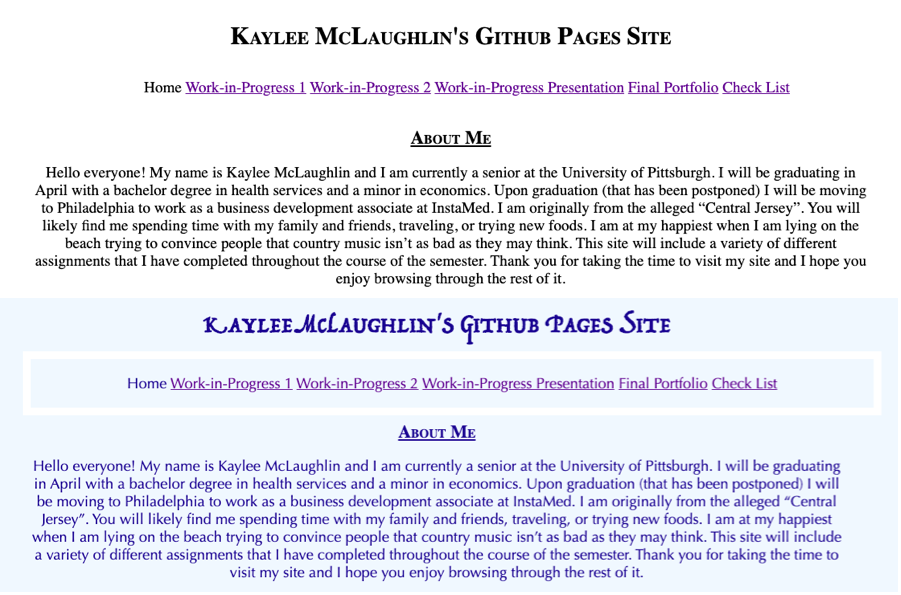
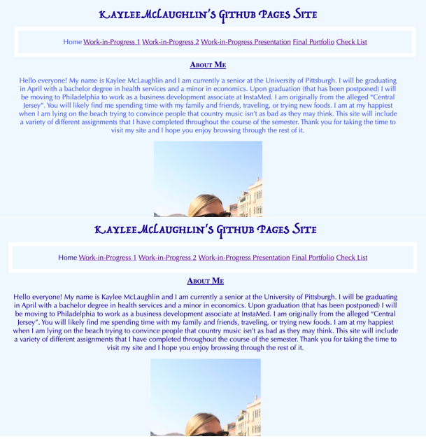
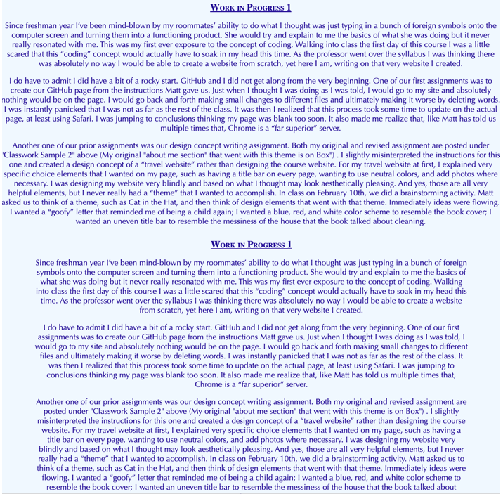
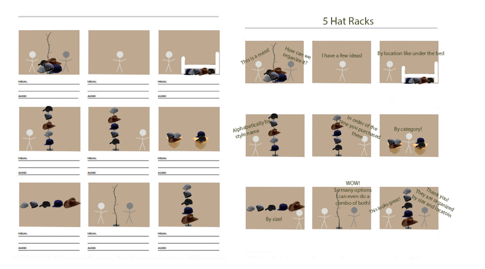
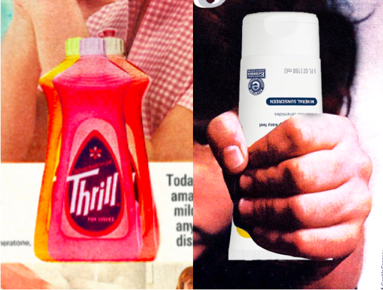

My Portfolio
Reflection Essay
At the start of the semester I was a bit worried that I would not be successful in this course. I had limited previous experience with just about everything on the syllabus. Web design and the use of GitHub were first our first assignments, both of which were foreign to me. The first site I produced was almost identical to the bare-minimum class skeleton that was given to us to help us follow along. It was a step in the right direction for me, however, I wanted to personalize my site and make revisions. I define revisions as changes made to correct or better something.
The first revision I made of my site was adding color to relate to the theme I chose. The original theme I had in mind was a beach coffee shop. I thought one of the best ways to portray this was to add a variety of different blues to my site. I originally chose a light blue background with white and royal blue font. However, I realized looking back it was a difficult to read with such little contrast between the colors. I then decided to change my font to a navy blue and now I believe my site is much easier to read.
Another revision I made to my site was for the viewers because I wanted my site to be simple and easy to use. I purposely displayed my menu bar across the top of the site on all pages so when looking through my website it was always known how to get back or go to a new page. To help my menu bar further stand out I revised my site to have a white border around it. In addition, I added an element that when the mouse scrolls over a link, the link changes colors.
Multimodal describes the combination of multiple different ways of communicating in everyday life. My site is an example of a multimodal project for a variety of different reasons. For one, the linguistic mode refers to the use of language. The word choice of my site is very simple and it does not take a genius to figure out what is being portrayed. On each page I explain what the content is and the site as a whole comes together as a cohesive unit. The visual mode refers to the use of images and other characteristics that readers see. This can include the different shades of blues I chose to resemble the ocean, the simplistic layout, the portioned sizes of the photos included, or the centering of everything on my site. The aural mode focuses on sound. I definitely could have used more aural modes on my site, however, the soundscape activity mentioned below is a great use of aural mode. When the sound plays it is supposed to make you feel like you are sitting on a bench at the beach. Spatial mode focuses on the physical arrangement of something. The placement of my menu bar at the top of the page is an example of how I used the spatial mode for easiest access on my site.
The target audience for my site was a mid-aged working individual during vacation. In my opinion a coffee shop is a place you go to relax, talk with friends or family, or get mindless work done. A beach to me is similar in the sense that you can go there to relax, spend time with people, or read a book. To have both of these concepts overlap was the goal of my site. I used relaxing colors, photographs where fitted, a simple font, and smooth navigation instructions so that my intended audience could feel at ease when breezing through my site.
I feel that the pre-work and brainstorming activities were the most important components to my websites. Starting off the process of building a site I had very limited ideas in mind about an overarching goal or theme I wanted to portray. I had a difficult time going back and forth about colors, layout styles, etc. However, once I had a vision in mind of the theme I wanted to portray ideas came flying to me. The same thing happened with all of my photoshop activities. For the logo creation, I wanted to create something that was fluid with my website but would also welcome people in to a coffee shop and I believe what I created was successful in doing so.
All of my assignments in this course had some sort of edit made to them. It is often I find myself satisfied at first with the project when I complete it, however, then I go back and find mistakes or changes that I want to make. This was especially the case with my first Photoshop activity where we changed the meaning of an Ad. Because I was new to Photoshop my edits (which is in Box) were very small. I changed a few colors and duplicated a bottle of soap. I used this photo as a way to play around with the tools. Once I got comfortable with them I turned the Crest ad into a sunscreen ad. It took me hours to get the sunscreen perfectly placed in the hand of the young boy. I constantly went back to find new areas around the hand where I could eliminate excess coloring until I was satisfied with the end result.
Overall, I was very satisfied with what I accomplished this semester. From having absolutely no experience with website building to creating an easily accessible and functioning website, that is something I am very proud of. I enjoyed getting feedback from both Matt and my peer review partner, Chelsea because they were able to see changes I should make that I may have not noticed without them. For example, Matt suggested to make my margins larger. I would have never guessed that a small change like that would make such a large change to my site in the way that it is viewed. My writings were much easier to read and the site overall just looked more uniform. I definitely learned a ton from this class that I will be able to take with me post-graduation. I am excited to be able to use the skills I have gained the last few months and put them to use on my next task or challenge.
Word count: 1,072
Showcase and Reflections
1.An example of how you made a choice related to genre or audience.
The intent of my website was to give off a warm and relaxing type of vibe for people to view when they want to debrief. I did this by using warm colors, playful fonts, and simplicity in the design. The font I used for the main header is supposed to mimic a wave and the blues I used are supposed to be a symbol of perfectly blue skies and a calm ocean. If were to change the genre of my website to a more serious or sophisticated site I would use black and white and a more professional style font. If I made this change I think a different audience would be more interested in viewing my site. The site would give off more serious meaning and probably be understood as strictly a website I am able to post my completed classwork on. I believe both an expert on web design as well as a beginner would both prefer my website as it is because it is more visibly appealing to the eye.

2. An example of how you made a choice related to color, fonts, captions, scale, or other aspects of the visual mode.
The colors of my site were very thought out. The color blue represents the sky and the sea and is often associated with calmness and sensitivity. Blue also represents meanings of trust, loyalty, and confidence. I wanted my website to be a place people could go to relax and view the work I have completed throughout the course of the semester. I believe the webpage color and font being blue both helped portray that. When I first created my site I used a royal blue for the body of my page and although I liked how it looked, there was not enough contrast between the background color and the font. When I changed the font color to a navy the site looked more uniform and the text was able to stick out more. Depending on how I would like my viewers to feel when they are looking at my site I am able to change the font color/style and background color. For a more playful and energetic look I could possibly change the font on my site to be rainbow.

3. An example of how you made a choice related to comparing one thing to another.
With web design I believe trial and error is a great way to decide which display element (s) you may like better. One element played around with was the margin widths. At first as shown in the photo below I had my margins set on “auto”. This setting allowed my text to run the width of the entire screen. I did not see anything wrong with that until the feedback I received on my first work in progress. In my feedback Matt suggested increasing my margins. I would have never thought that making such a small adjustment in the CSS would make such a large adjustment on the site. After receiving that feedback, I went into my coding and essentially trial and errored different margin sizes. With the margin sizes I have now, I believe my site is much easier to read. For the comparison to be more effective I could have potentially adjusted the font styles as well to see which revision was the best, however, I am happy with what I have now.

4. An example of something that frustrated you or took a larger amount of time than you would have liked.

5. An example of something you are particularly proud of
One project this semester that I am particularly proud of was my expectations assignment. I believe this project was one of the ones that I learned the most on and helped me begin to get more comfortable with Photoshop. The photo below on the left was my first attempt with Photoshop in class. There was very minimal done to the Ad. I was able to change situation of the soap bottle and duplicate the item. However, if you look closely I did not duplicate the entire bottle and the top cap was missing. Looking at that photo and then the one to the right I believe I learned a ton. In the photo on the right I was able to extract the original toothpaste bottle that the child was holding and insert a sunscreen bottle, of an entirely different shape, into his hand. I took my time going around the edges with an eraser to make the photo look as believable as possible. I will be able to take the skills I learned from completing this assignment, specifically the background eraser tool, and better my projects in the future.

6. Soundscape Activity
Audacity was another platform that I had never used before. At first it was also slightly overwhelming because of all of the different tools that were available. The only sound editing platform I used prior to this was in iMovie so I tried to take what I knew from there and apply it to these assignments. Using Audacity, I created my soundscape below to mimic that of a perfect beach day. The reason I chose to mimic the beach was because I wanted my soundscape to fit the theme of my website. I wanted people listening to this sound to feel like they were sitting on the beach relaxing. I tried my best to add seagulls chirping, lifeguards whistling, waves crashing, ice cream bells, and children playing all into the 60 second clip. I was impressed with how similar the clip I created sounded like the beach. I believe all of the noises I combined together sound uniform and merge well with one another